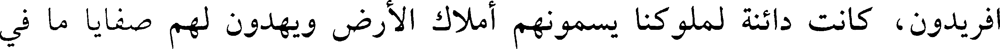
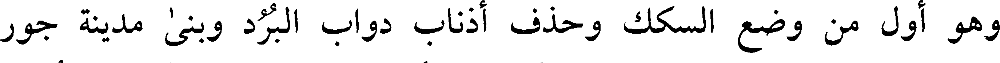
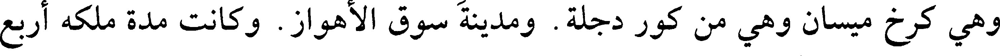
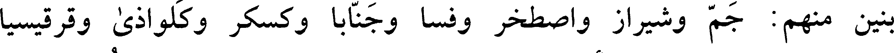
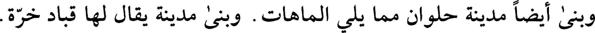
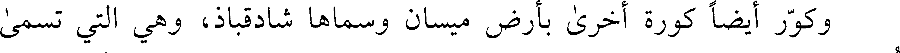
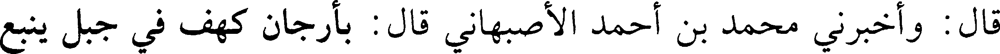

000102.gt.txt

التي عليها ضبع العالم وكل سرب ومغيض فإنما استقباله من ناحية الشمال وليس
000103.gt.txt

النيل كذلك لأن مجراه من ناحية الجنوب وليست التماسيح في شيء من هذه
000104.gt.txt

الأودية المعروفة لا ترى بالفرات ولا دجلة ولا سيحان ولا جيحان ولا نهر بلخ،
000105.gt.txt

ولا فيها من الفساد والدواب الخبيثة، وشرب أهل مصر في البواقيل (1) ، وقال
000106.gt.txt

النبي (صعلم) : «تغور المياه كلها وترجع إلى أماكنها، إلا نهر الأردن ونيل مصر
000107.gt.txt

والحجرات وعرفات ومنا» . وقال ابن الكلبي: إذا طلع العيوق غارت المياه كلها
000108.gt.txt

ونقصت إلا نيل مصر، ويمتد النيل لسبع من أيار. وقال عبد الله بن عمرو: نيل
000109.gt.txt

مصر سيد الأنهار، سخر الله له كل نهر بين المشرق والمغرب، فإذا أراد الله أن
000110.gt.txt

يجريه أمر كل نهر أن يمده، فأمدته الأنهار بمائها، فإذا فجر الله به الأرض عيونا
000111.gt.txt

وانتهى من جريته إلى ما أراد الله، أوحى الله عز وجل إلى كل ماء أن يرجع إلى
000112.gt.txt

عنصره، وفي الخبر أربعة أنهار من الجنة: النيل، والفرات، وسيحان، وجيحان.
000113.gt.txt

وقال بعضهم: النيل يخرج من خلف خط الاستواء من بحيرتين يقال لهما بحيرتا
000114.gt.txt

النيل، وهو يطيف أرض الحبشة ويجيء فيمر بين بحر القلزم- وهو بحر الفرما-
000115.gt.txt

وبين المفازة، فيجيء فيصب بدمياط، ويخرج إلى البحر الرومي المغربي، ودمياط
000116.gt.txt

على البحر الرومي المغربي. وقال أبو الخطاب: قال المشتري ابن الأسود: غزوت
000117.gt.txt

بلاد أنبية عشرين غزاة، من السوس الأقصى، فرأيت النيل بينه وبين البحر الأجاج
000118.gt.txt

القول في فارس
000119.gt.txt

حدثنا أبو عمرو عبد العزيز بن محمد بن الفضل، حدثنا إبراهيم بن الجنيد
000120.gt.txt

حدثنا بشر بن محمد بن أبان عن داود بن المخير عن الصلت [89 أ] بن دينار عن
000121.gt.txt

عبد الله بن أبي مليكة قال: قال رسول الله (صعلم) : أهل فارس عصبتنا. ويروى عن
000122.gt.txt

أنس بن مالك قال: إن الله خير بين خلقه، فخيرته من العرب قريش وخيرته من
000123.gt.txt

العجم فارس.
000124.gt.txt

ويروى عن النبي (صعلم) أنه قال: أسعد الناس بالإسلام أهل فارس. وأشقى
000125.gt.txt

العرب به بهراء وتغلب
000126.gt.txt

وقال ابن لهيعة: فارس والروم قريش العجم
000127.gt.txt

وقال في قوله عز وجل (واذكروا إذ أنتم قليل مستضعفون في الأرض تخافون
000128.gt.txt

أن يتخطفكم الناس) قال: الناس إذ ذاك فارس والروم. وفي قوله (يستبدل قوما
000129.gt.txt

غيركم ثم لا يكونوا أمثالكم) قال: فارس
000130.gt.txt

ولما هدم ابن الزبير البيت، قال اطلبوا من العرب من يبنيه. فلم يجدوا
000131.gt.txt

فقال استعينوا بأهل فارس فإنهم ولد إبراهيم. ولن يرفع البيت إلا ولد إبراهيم
000132.gt.txt

وقال رسول الله (صعلم) : أبعد الناس من الإسلام الروم، ولو كان معلقا بالثريا
000133.gt.txt

لتناولته فارس. يعني الإسلام
000134.gt.txt

[قال وذكر النبي (صعلم) كسرى أنوشروان فقال: ويل أمه، ما أعمق سلمه لو
000137.gt.txt

إلى القبط والبرابر. وجزء منها أرض كور السواد، ما بين البرابر إلى الهند. والجزء
000138.gt.txt

الرابع هذه الأرض التي تنسب إلى فارس ما بين نهر بلخ إلى منقطع آذربيجان
000139.gt.txt

وطخارستان. فكان هذا الجزء صفوة الأرض. وهو من الأرضين بمنزلة الرأس
000140.gt.txt

والسرة والسنام والبطن. أما الرأس، فإن ملوك أقطار الأرض مذ كان ايرج بن
000141.gt.txt

افريدون، كانت دائنة لملوكنا يسمونهم أملاك الأرض ويهدون لهم صفايا ما في
000142.gt.txt

أرضهم
000143.gt.txt

وأما السرة، فإن أرضنا وضعت من الأرضين موضع السرة من الجسد في
000144.gt.txt

البسطة والكرم وفيما جمع لنا مما نرئسهم به. فأعطينا فروسية الترك وفطنة الهند
000145.gt.txt

وصناعة الروم، وأعطينا في كل شيء من ذلك الزيادة على ما أعطوا، وأصفينا ما
000146.gt.txt

حرموا بأدب الدين في أدب الملك. وأعفينا إلى مسام سيماء مشترعة في صورنا
000147.gt.txt

وألواننا وشعورنا كما شوهت سائر الأمم بصنوف الشهرة من لون السواد وشدة
000148.gt.txt

الجعودة والسبوطة وصغر العيون وقلة اللحى. فأعطينا الأوساط من المحاسن
000149.gt.txt

والشعور والألوان والصور والأجسام
000150.gt.txt

وأما السنام، فإن أرضنا على صغرها عند بقية الأرضين هي أكثر منافع والين
000151.gt.txt

عيشا من جميع ما سواها
000152.gt.txt

وأما البطن، فإن الأرضين كلها تجلب إليها منافعها من علمها ورفقها
000153.gt.txt

وأطعمتها وأدويتها وأمتعتها وعطرها كما تجبى الأطعمة والأشربة إلى البطن
000154.gt.txt

وقال الواقدي: شاور عمر بن الخطاب رضي الله عنه الهرمزان في فارس
000155.gt.txt

وإصبهان وآذربيجان. فقال الهرمزان: إن إصبهان وآذربيجان الجناحان. فإن
000156.gt.txt

قطعت الجناحين، بقي الرأس. وإن قطعت الرأس وقع الجناحان، فابدأ بالرأس
000157.gt.txt

وكان أول من جمع فارس وملكها، أردشير بن بابك بن ساسان، وهو أحد
000158.gt.txt

ملوك الطوائف وكان على إصطخر، وهو من أولاد [90 أ] الملوك المتقدمين قبل
000159.gt.txt

ملوك الطوائف. فرأى أنه وارث ملكهم فكتب إلى من بقربه من ملوك فارس ومن
000160.gt.txt

405
000161.gt.txt

نأى عنه من ملوك الطوائف يخبرهم بالذي أجمع عليه من الطلب بالملك لما فيه من
000162.gt.txt

صلاح أمور الرعية وإقامة الدين والسنة. فمنهم من أقر له بالطاعة، ومنهم من لم
000163.gt.txt

يقر له حتى قدم عليه، ومنهم من عصاه فصار عاقبة أمره إلى القتل والهلاك. حتى
000164.gt.txt

استوسق له ملكه. وهو الذي افتتح الحضر. وكان ملك السواد متحصنا فيه وكانت
000165.gt.txt

العرب تسميه الساطرون. وفيه يقول أبو داود
000166.gt.txt

وأرى المـوت قـد تـدلـى مـن الحضـر علـى رب أهلـه السـاطـرون
000167.gt.txt

وقد أتينا بخبره فيما تقدم
000168.gt.txt

وهو أول من وضع السكك وحذف أذناب دواب البرد وبنى مدينة جور
000169.gt.txt

بفارس وكان موضعها صحراء. فمر بها أردشير فأمر ببنائها وسماها أردشير خرة
000170.gt.txt

وسمتها العرب جور. وهي مبنية على صورة دارابجرد. ونصب فيها بيت نار.
000171.gt.txt

وبنى مدينة رام أردشير وبهمن أردشير خرة وهي فرات البصرة. واستاراباذ
000172.gt.txt

وهي كرخ ميسان وهي من كور دجلة. ومدينة سوق الأهواز. وكانت مدة ملكه أربع
000173.gt.txt

عشرة سنة وستة أشهر.
000174.gt.txt
وقالوا: سمعوا فارس بفارس بن طهومرث وهو الذي تنسب الفرس إليه،
000175.gt.txt

لأنهم من ولده. وكان ملكا عادلا متحننا محتاطا على أهل عصره. وكان له عشرة
000176.gt.txt

بنين منهم: جم وشيراز واصطخر وفسا وجنابا وكسكر وكلواذى وقرقيسيا
000177.gt.txt

وعقرقوف [ودارابجرد] . فأقطع كل واحد منهم البلد الذي سمي به ونسب إليه .
000178.gt.txt

وإنما كانوا قبل ذلك يسكنون الخيام. ويقال إن ملكه كان ثلاثمائة سنة.
000179.gt.txt

ومن مدينة سوق الأهواز إلى مدينة أرجان أول عمل فارس من هذا الوجه
000180.gt.txt

واحد وثلاثون فرسخا. وأرجان بناها قباذ بن فيروز لأنه لما استرجع الملك من أخيه
000181.gt.txt

جاماسف غزا الروم فافتتح مدينتين من مدن الجزيرة مما كانت في أيدي الروم تدعى
000182.gt.txt

واحدة آمد والأخرى ميافارقين. وأمر فبنيت فيما بين حد فارس والأهواز مدينة
000183.gt.txt

وسماها ابرقباد، وهي التي تسمى أرجان. وأسكن فيها سبي [90 ب] همدان
000184.gt.txt

406
000185.gt.txt

وكورها كورة وضم إليها رساتيقها من كور رام هرمز وكورة سابور وكورة أردشير
000186.gt.txt

خرة وكورة إصبهان
000187.gt.txt

وبنى أيضا مدينة حلوان مما يلي الماهات. وبنى مدينة يقال لها قباد خرة
000188.gt.txt

وكور أيضا كورة أخرى بأرض ميسان وسماها شادقباذ، وهي التي تسمى
000189.gt.txt

أستان العالي. ووضع لها أربعة طساسيج: طسوج فيروز شابور وهي الأنبار وكان
000190.gt.txt

منها هيت وعانات فأفردها يزيد بن معاوية (1) في أيامه إلى الجزيرة. وطسوج
000191.gt.txt

بادوريا وطسوج قطربل وطسوج مسكن
000192.gt.txt

وكور أيضا كورة بهقباذ الأعلى ووضع لها ستة طساسيج: طسوجي النهرين
000193.gt.txt

وطسوج عين التمر والفلوجتين العليا والسفلى وطسوجي بابل وخطرنية.
000194.gt.txt

وكور أيضا بهقباد الأوسط ووضع لها أربعة طساسيج: طسوج سورا
000195.gt.txt

وطسوج باروسما والجبه والبداة. وطسوج نهر الملك.
000196.gt.txt

وكور أيضا بهقباد الأسفل ووضع لها خمسة طساسيج: فرات بادقلى
000197.gt.txt

والسيلحين. وطسوج الحيرة وطسوج تستر وطسوج هرمزجرد.
000198.gt.txt

وفرق كورة إصبهان على شقين: شق جي وشق التيمرة.
000199.gt.txt

وأمر فبنيت مدينة شهرزور وهي بأرض به. وفيما بين جرجان وإيران شهر
000200.gt.txt

مدينة أسماها شهرقباد.
000201.gt.txt

وبأرجان قنطرة كسروية طويلة أكثر من ثلاثمائة ذراع مبنية بالحجارة على
000202.gt.txt

وادي أرجان.
000203.gt.txt

قال: وأخبرني محمد بن أحمد الأصبهاني قال: بأرجان كهف في جبل ينبع